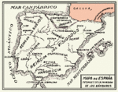

De: La Frikipedia, la enciclopedia extremadamente seria.
De: La Frikipedia, la enciclopedia extremadamente seria. De: La Frikipedia, la enciclopedia extremadamente seria.
| De la serie Países del planeta tierra: | |||||
| Islas chafadas | |||||
|---|---|---|---|---|---|
| |||||
| Lema: Prohibido hacer fotos con o sin flash | |||||
| Himno: {{{himno_nacional}}}
| |||||
| 
| |||||
| Capital | Isabel II | ||||
| Mayor ciudad | Isabel II | ||||
| Lenguas oficiales | Español sin tacos, Pio pio | ||||
| Gobierno | República Gaviotista | ||||
| Gaviota mayor | Aitor Menta | ||||
| Área | 3 islotes... | ||||
| Población | 2 personas y 1987 gaviotas | ||||
| Moneda | Lero o Pez1 | ||||
| Zona horaria | GTM +1 (GMT en Canarias) | ||||
| Dominio Internet | las gaviotas prefieren el parchis. | ||||
| Código telefónico | 000
| ||||
| 1- veasé en las gaviotas | |||||
Las Islas Chafarinas o denominadas en la jerga mediterránea Chafarderas, es un enclave españó ya que tres benditas banderas ondean en sus cumbres desde que alguien las pidió como regalo a los reyes magos en 1848. Aunque está prohibido tomar fotos, alcohol, usar teléfonos móviles y la homosexualidad…normalmente abunda al tercer día.
La principal isla se denomina Isabel II. Su nombre deriva de Isabelilla Bragaesparto, señora de moral distraída, que para su suerte su barco naufrago por dicha costa isleña siendo atendida por la guarnición, que debido a la indecisión de los hombres no tenía nombre a estas alturas. El II es un misterio y los viejos del lugar dicen que es debido a que en la costa de enfrente ya existía dicho nombre en un local de alterne por lo que para que los marineros no se confundieran se le denominó II. Sus principales construcciones son el puente roto, el pirata, la casa de los biólogos, la cantina, la Iglesia del señor, el Faro, la compostera y el polvorín.
A continuación expondremos los diferentes lugares salvo el del polvorín que aunque todo el mundo sabe donde está, todavía piensan en la isla que los marroquíes lo quieren para algo, siendo un secreto a voces que allí sólo se guarda la colección en DVD de Verano Azul.
El Puente Roto: Todavía es un misterio para que hacer un puente hacia la otra isla, si siempre están las gaviotas criando y los biólogos no te dejan pasar.
Actualmente la Dirección de Parques última un convenio para que se reconstruya por parte de la gente del INJUVE.
El pirata: Se ubica junto al puente y tiene un uso mal definido, aunque afirman que se estudian las lapas y los líquenes allí, nunca se ve a nadie entrar o salir.
La Casa de los biólogos: La antigua casa de la JOP sirve en la actualidad como estación biológica. En ella es frecuente ver seres llegados de más allá de África dedicándose al apasionado mundo de las …gaviotas, lapas y demás animalillos frecuentes en la isla. Dos meses al año son sometidos a pruebas de gran fortaleza, aguantando a grupos de jóvenes que van a no se sabe muy bien a que. La leyenda cuenta que si entras en su zona secreta aguardan tesoros maravillosos.
Autor(es):